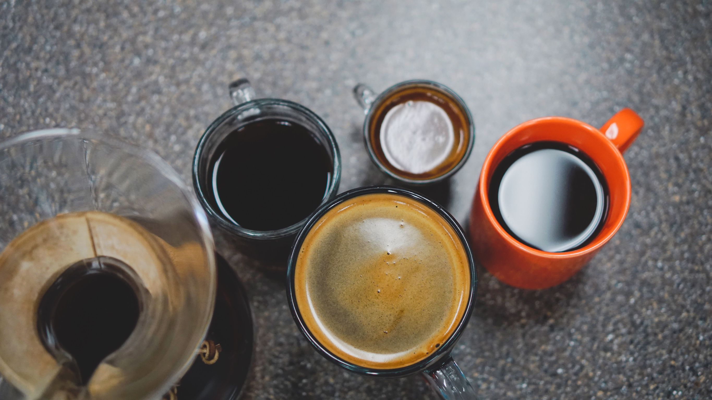

Historia de las olas de café
Cuando se habla de la historia del café, muchas veces se separa el desarrollo de la industria cafetera en etapas a las que llamamos Olas del café
La primera ola se remonta a una etapa del año 1800 cuando la industria del café arrancó a crecer de forma exponencial. Empezó a ser mucho más accesible y consumirse a diario, aunque no había mucho interés por las calidades y orígenes. Era un artículo básico que aportaba cafeína y daba energía.
Alrededor del año 1900 comienza a desarrollarse la máquina de espresso que, aunque con poco éxito en un principio, terminó siendo un ícono del buen café.
La segunda ola aparece alrededor del año 1970, cuando empiezan a aparecer grandes empresas que se dedican al café de forma exitosa, como el gigante Starbucks. También fue en los 70’ que apareció por primera vez el término de cafés especiales en referencia a lotes chicos y en 1982 se fundó la Asociación de Café de Especialidad (SCA).
La tercera Ola
Alrededor del año 2000 aparecen dos palabras clave: apreciar y calidad. En ésta etapa cambia la forma en que la gente toma el café.
Sustentabilidad, tratos directos con las fincas productoras, estudio de los tuestes, análisis sensoriales y métodos de preparación innovadores (como la Aeropress) son todos conceptos que aparecen durante la tercera ola, junto con una especial dedicación a la atención al cliente en busca de difundir una “educación cafetera” que ayude a hacer visible toda la cadena.